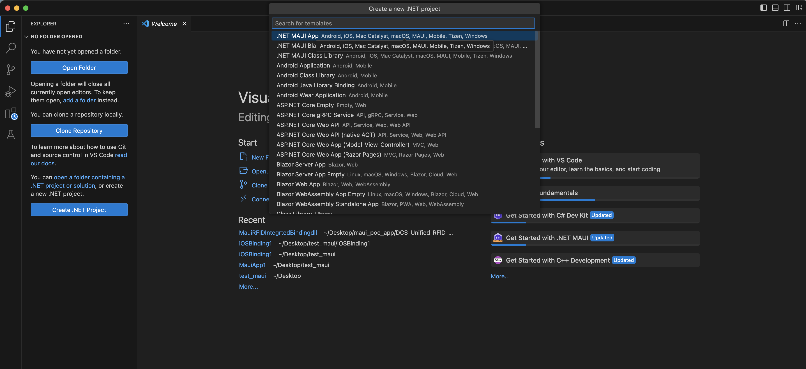
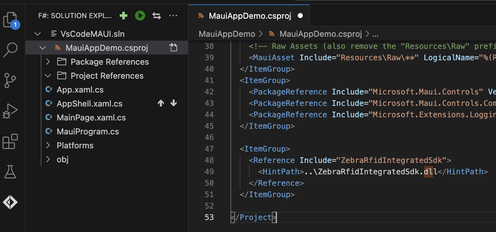
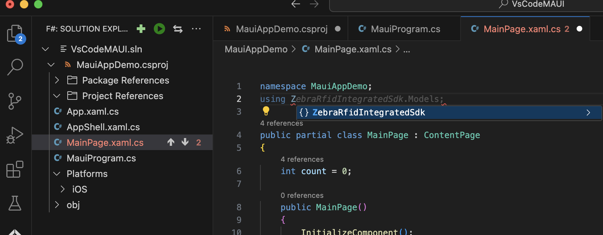

Overview
This section provides step-by-step instructions on developing MAUI Framework based RFID applications for Android and iOS with Microsoft Visual Studio 2022.
Development Environment
Please refer the instructions provided below for configuring development environment in the respective platform.
Microsoft Windows
-
Install Visual Studio 2022 on Windows computer
https://learn.microsoft.com/en-us/visualstudio/install/install-visual-studio?view=vs-2022 -
Follow instruction in the provided link below to configure Xamarin.iOS.
https://docs.microsoft.com/en-us/xamarin/ios/get-started/installation/windows/?pivots=windows -
Additionally, follow instructions below in linking to a MAC which is mandatory requirement.
https://docs.microsoft.com/en-us/xamarin/ios/get-started/installation/windows/connecting-to-mac/
macOS
-
Follow instructions in the provided link to install Visual Studio 2022 on Mac OS. Make sure to select “iOS + MAUI Support” workload during the installation.
https://visualstudio.microsoft.com/thank-you-downloading-visual-studio-mac/?sku=communitymac&rel=17
Create .NET MAUI App
Open Visual Studio 2019 (or 2022), navigate to Multiplatform → App → .NET MAUI App and create the MAUI application by following the wizard.

Provide app name and a location.
Add the 'ZebraiOSRfidLibrary.dll' to the root folder of the project.
Then add a reference to the 'ZebraRfidSdk.dll' by right click on Dependencies → Add Project Reference → .Net Assembly → Browse and select the dll file



Open the 'Info.plist' file under Platforms -> iOS
Update the 'Info.plist' as described here.
Add followings entries under “Required background modes” property:
- App communicates with an accessory
- App communicates using CoreBluetooth
- App shares data using CoreBluetooth

Add 'com.zebra.rfd8x00_easytext' String under 'Supported external accessory protocols' property.
- com.zebra.rfd8x00_easytext
- com.zebra.scanner
- com.motorolasolutions.scanner
- com.motorolasolutions.CS4070_ssi
ZebraRfidIntegratedSdk APIs
Namespace
Import the RFID SDK namespace before making API calls.
using ZebraRfidIntegratedSdk;
Query SDK Version
Version information could be queried as follows
//Create an instance of the RfidSDK
IsrfidISdkApi apiInstance = srfidSdkFactory.CreateRfidSdkApiInstance;
//Get the RFID SDK version
string version = apiInstance. GetSrfidGetSdkVersion;
//Create an instance of the RfidSDK
SbtSdkApi iosScannerApi = SbtSdkFactory.CreateSbtSdkApiInstance;
//Get the RFID SDK version
string version = iosScannerApi.SbtGetVersion;
Set Operation Mode
Set the operation mode of the reader
//Create an instance of the Readers
ISbtSdkApi iosScannerApi = SbtSdkFactory.CreateSbtSdkApiInstance;
//Set Operation Mode
SbtResult opModeStatus = iosScannerApi.SbtSetOperationalMode((int)opMode);
Supports following operations modes
- OPMODE_MFI
- OPMODE_BTLE
- OPMODE_ALL
Get Available Reader List
Query paired device list as follows. Reader must be paired with the iOS device via Bluetooth before query action
//Get available readers list - RFID
NSMutableArray availableReaders = new NSMutableArray();
IntPtr availableHandle = availableReaders.Handle;
SrfidResult availableReaderResult = apiInstance.SrfidGetAvailableReadersList(out availableHandle);
availableReaders = ObjCRuntime.Runtime.GetNSObject(availableHandle);
// Available reader list – Scanners
NSMutableArray availableScanners = new NSMutableArray();
IntPtr availableHandle = availableScanners.Handle;
SbtResult availableScannerResult = iosScannerApi.SbtGetAvailableScannersList(out availableHandle);
availableScanners = ObjCRuntime.Runtime.GetNSObject(availableHandle);
Connect/Disconnect RFID Reader
Connect to the first available reader.
//Connect to a given reader - RFID
apiInstance.SrfidEstablishCommunicationSession(readerId);
//Connect to a given reader – Scanner
iosScannerApi.SbtEstablishCommunicationSession(scannerID);
Disconnected from the connected reader
//Disconnect to a given reader
apiInstance.SrfidTerminateCommunicationSession(readerId);
// Scanner Disconnect
iosScannerApi.SbtTerminateCommunicationSession(scannerID);
Start/Stop Inventory
RFID tag reading can be started as follows. Once started, tags in the range will be read continuously.
//Start reading available RFID tags
string statusMessage = null;
srfidTagReportConfig tagReportConfiguration = this.RfidGetTagReportConfiguration(readerID);
srfidReportConfig reportConfigaration = new srfidReportConfig();
srfidAccessConfig accessConfig = new srfidAccessConfig();
SrfidResult statusStartInventory = apiInstance.SrfidStartInventory(readerID, SrfidMemorybank.None, reportConfigaration, accessConfig, out statusMessage);
RFID tag reading cycle can be terminated as follows
//Stop reading RFID tags
string statusMessage = null;
SrfidResult statusStopInventory = apiInstance.SrfidStopInventory(connectedReaderID, out statusMessage);
Start/Stop Tag Locate
Tag locating can be started as follows. should be set to the ID to be searched
//Locate tags
string statusMessage = null;
SrfidResult statusStartTagLocation = apiInstance.SrfidStartTagLocationing(connectedReaderID, epcID, out statusMessage);
Stop locating tags
//Stop locating tags
string statusMessage = null;
SrfidResult statusStopTagLocation = apiInstance.SrfidStopTagLocationing(connectedReaderID, out statusMessage);
Start/Stop Trigger Configuration
Set Start Trigger Configuration to the reader.
//Set configurations
string statusMessage = null;
srfidTagReportConfig tagReportConfiguration = this.RfidGetTagReportConfiguration(readerID);
srfidReportConfig reportConfigaration = new srfidReportConfig();
srfidAccessConfig accessConfig = new srfidAccessConfig();
//Set start trigger configurations
SrfidResult statusStartInventory = apiInstance.SrfidStartInventory(readerID, SrfidMemorybank.None, reportConfigaration, accessConfig, out statusMessage);
Set Stop Trigger Configuration to the reader.
string statusMessage = null;
SrfidResult statusStopTagLocation = apiInstance.SrfidStopTagLocationing(connectedReaderID, out statusMessage);
Set Tag Report Configuration
Tag Report Configuration can be applied as follows.
string statusMessage = null;
srfidTagReportConfig tagReportConfig = new srfidTagReportConfig();
IntPtr availableHandle = tagReportConfig.Handle;
SrfidResult tagsReporConfigtResult = apiInstance.SrfidGetTagReportConfiguration(connectedReaderID, out availableHandle, out statusMessage);
tagReportConfig = ObjCRuntime.Runtime.GetNSObject(availableHandle);
Set Regulatory Configuration
Regulatory Configuration can be applied as follows.
string statusMessage = null;
srfidRegulatoryConfig config = new srfidRegulatoryConfig();
IntPtr availableHandle = config.Handle;
SrfidResult regulatoryConfigResult = apiInstance.SrfidGetRegulatoryConfig(connectedReaderID, out availableHandle, out statusMessage);
config = ObjCRuntime.Runtime.GetNSObject(availableHandle);
Events
Activity Events
Appeared
This event is triggered when the readers appeared.
public enum NotificationsRFID
{
READER_APPEARANCE = 2,
READER_DISAPPEARANCE = 4,
SESSION_ESTABLISHMENT = 8,
SESSION_TERMINATION = 16,
}
apiInstance.SrfidSubsribeForEvents((int)NotificationsRFID.READER_APPEARANCE + (int)NotificationsRFID.READER_DISAPPEARANCE + (int)NotificationsRFID.SESSION_ESTABLISHMENT + (int)NotificationsRFID.SESSION_TERMINATION);
Disappeared
This event triggers when the readers disappeared
public delegate void RfidDisappearedEventEventHandler(int readerId);
public static event RfidDisappearedEventEventHandler RfidDisappearedEvent;
public override void SrfidEventReaderDisappeared(int readerID)
{
SetAvialbleReaderID(-1);
var handler = RfidDisappearedEvent;
if (handler != null)
{
handler.Invoke(readerID);
}
}
Connected
This event triggers when the readers are connected.
public delegate void RfidConnectedEventEventHandler(srfidReaderInfo activeReader);
public static event RfidConnectedEventEventHandler RfidConnectedEvent;
public override void SrfidEventCommunicationSessionEstablished(srfidReaderInfo activeReader)
{
apiInstance.SrfidEstablishAsciiConnection(activeReader.ReaderID, "");
SetConnectedReaderID(activeReader.ReaderID);
var handler = RfidConnectedEvent;
if (handler != null)
{
handler.Invoke(activeReader);
}
}
Disconnected
This event triggers when the readers are disconnected
public delegate void RfidDisconnectedEventEventHandler(int readerId);
public static event RfidDisconnectedEventEventHandler RfidDisconnectedEvent;
public override void SrfidEventCommunicationSessionTerminated(int readerID)
{
SetAvialbleReaderID(-1);
var handler = RfidDisconnectedEvent;
if (handler != null)
{
handler.Invoke(readerID);
}
}
TagDataEvent
This event triggers when tag data is received
public delegate void TagDataEventHandler(srfidTagData tagData, int scannerID);
public static event TagDataEventHandler TagDataEvent;
public override void SrfidEventReadNotify(int readerID, srfidTagData tagData)
{
SetTagDataForInventory(tagData);
var handler = TagDataEvent;
if (handler != null)
{
handler.Invoke(tagData, readerID);
}
}
ProximityPercent
This event will trigger when tags are nearby.
public delegate void TagLocateEventHandler(int proximity);
public static event TagLocateEventHandler SingleTagLocateEvent;
public override void SrfidEventProximityNotify(int readerID, int proximityPercent)
{
var handler = SingleTagLocateEvent;
if (handler != null)
{
handler.Invoke(proximityPercent);
}
}
Action Status Events
Following events can be registered to get RFID reader related information
- OperationEndSummary
- Temperature
- Power
- Database
- Radio
- OperationStop
- OperationBatchmode